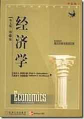
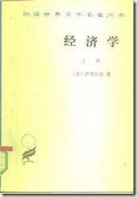

伟大的萨缪尔森
{kind=link}
1.
14号。晚上回家开电脑，看到的第一条消息就是萨缪尔森去世的报导。赶紧给Li通报一下，Li说：“上午就知道啦。”恩，萨缪尔森的逝世，应该是一条公众新闻。
2.
萨缪尔森是谁？功成名就，他比所有人都早。更让对手气急败坏的是，他又活得比所有人都长。他是美国第一个经济学诺奖得主（1970年第二届），1915年出生。
在国内的新闻里，现在一般都会提到，保罗·萨缪尔森（Paul Samuelson）有一个侄子，就是著名经济学家、美国前财长兼前哈佛校长劳伦斯·萨默斯（Lawrence Summers）。——看来萨缪尔森真是老啦，他在政治上风光的时候，乃是上世纪的肯尼迪和约翰逊时代，现在公众眼里，有这个侄子似乎也是荣耀。这个劳伦斯·萨默斯，是他的亲弟弟罗伯特·萨默斯（Robert Summers）的儿子。——但愿你能看出端倪，姓萨缪尔森的哥哥有个姓萨默斯的亲弟弟。
保罗·萨缪尔森大概是世界上姓“萨缪尔森”最有名的人物，——罗伯特·萨缪尔森也应该很早就意识到，所以改姓为萨默斯，不然一提到罗伯特·萨缪尔森，人家就会问他是不是萨缪尔森的弟弟——有志气有远见的人啊。除了有一个争气的儿子，罗伯特·萨默斯，同他的夫人阿妮塔·萨默斯(Anita Summers)，也是宾大有名的经济学教授。
——不要忽视阿妮塔·萨默斯！她的哥哥，跟萨缪尔森一样，都要比她儿子有名。她的哥哥叫肯尼斯·阿罗（Kenneth Arrow，1921-），1972年的经济学诺奖得主。这一切，从著名经济学家、美国前财长兼前哈佛校长劳伦斯·萨默斯的角度来说就顺畅多了：他有一对经济学教授的父母，伯父是70年的经济学诺奖得主萨缪尔森，舅舅是72年的经济学诺奖得主阿罗。——如果他们一家子再厉害，如果不改姓叫萨默斯，名子要被人记起就困难多啦。
3.
回到萨缪尔森。怎么说？他在经济学界的声名，大概相当于图灵或者冯·诺依曼在计算机科学的地位（当然，萨缪尔森的寿命，也大概是他们俩加起来那么大）。看看他做了些什么：
- 在哈佛写了一篇博士论文，后来根据这份论文出了一本书，叫做《经济分析基础》（Foundations of Economic Analysis， 1947），拿数学改写了整个经济学。他之前的经济学教育模式，就跟社会学等学科一样，以阅读历史、政治经济学等社科文献为主。后来啊，经济学就成他所想要的那样子了，每个经济系学生都得狂补数学，经济学再也不是文科生的天下了。
- 加入了一个大学的经济系，叫做山东科技大学（后来叫麻省理工学院，MIT），并为之服务了半个多世纪，并把它打造成世界上最好的经济系，吸引了世界上最好的学生以及经济学家（包括索洛、克鲁格曼、默顿、斯蒂格利茨等）。
- 写了一本经济学入门教科书，1948年开始，到现在已经出到19版（2009）。在他的《经济学》之前，世界上最流行的经济学入门书是马歇尔的《经济学原理》，而在这之后的半个世纪里，则他的书指导学生如何学经济学经济学家如何写经济学教材。——不得不提一句，时过境迁，现在是曼昆的经济学原理教材一统江湖了。
当然，他还有在经济学诸多领域的理论贡献。比如，在微观经济学中，有一个叫“显示性偏好”(revealed preference)的理论就是他的，一个比较犀利的理论。在经典的消费者理论中，一般都先假定消费者的偏好（用效用函数表示），然后根据他的偏好以及预算约束，导出他的需求函数来，——这是一个很精致的理论，只是这个预设的消费者的偏好，比如偏好一篮子商品X甚于另一篮子商品Y，实在是一个比较玄乎的东西。萨缪尔森的“显示性偏好”理论，简单些说，就是如果消费者选择了X，而且Y又是他所能支付得起的，那么，X就被“显示性”偏好于Y。这里，偏好不再是被假设出来，而且从消费者的消费行为中观察或被“显示”出来。这个看似简单得要命的理论，在评估社会福利方面有大用。
萨缪尔森一生著述无数，这类的理论贡献有很多，比如在国际经济学方面，郭凯的经济博客讲了一个“巴拉萨－萨缪尔森效应”，不提。
4.
1915年出生，萨缪尔森跟今年过世的杨宪益先生同庚。1915年出生的，像胡/耀/邦、顾/准、刘宝瑞，或者作家贝娄，印象中都历史人物的模样，萨缪尔森在全世界的经济学子眼中，都常青树的形象，战后这半个多世纪中，他一直很活跃，而且每隔几年，就要修订一下他的《经济学》教材，大伙都读它。
现在手头还留有一本萨缪尔森的经济学教材，机工的影印16版（2003年），那是我第一本洋教材，经济学入门书。上一辈的经济学家，大概都是通过高鸿业翻译的该书第五版（选译本）或第十版（全本）来学习现代经济学的。高鸿业这个本子（1981），是商务印书馆“汉译世界学术名著”系列的一本，是当时唯一的现代经济学教材，当时是叫做“西方经济学”。直到上世纪八十年代才引进，在国人眼中，萨缪尔森就显得更年轻了，——但他的书，还是跟亚当·斯密等经典作家同列。
|  |  |
{kind=link}
5.
战胜对手，并且战胜时间（战胜了时间，就战胜了对手，你可以颤巍巍地站在窗前，看着对手一个个过世），萨缪尔森当然也不是独孤求败。他有一个终生对手，同样伟大的经济学家，米尔顿·弗里德曼(Milton Friedman)，1912到2006，一样活了94岁。萨缪尔森是支持国家干预市场的凯恩斯主义者，弗里德曼则是主张自由放任的芝加哥学派的领袖。他们曾同时在《新闻周刊》(Newsweek)开专栏，同台PK。弗里德曼亲市场，萨缪尔森主张国家（有限度的）干预，在现在的中文语境下，似乎是弗里德曼主张自由，萨缪尔森老土，——这大概是最幽默的事情了，在西方语境下，市场至上的观点，由来已久，弗里德曼是一个保守主义者，萨缪尔森相反是更liberal，通俗点说，弗里德曼貌似共和党，萨缪尔森则像是民主党。——左倾右倾自由保守，这等标签，都是随历史而演化的，而且经常跑到对立面去，噫。
6.
语录。萨缪尔森有一句话，
“假如我能够为这个国家写作经济学教科书，我才不关心是谁起草一个国家的法律。”
同样凯恩斯也说过，
“经济学家和政治思想家的思想，不管其正确与否，都比通常所认为的力量更大”。
对经济学家和经济学这门学科，凯恩斯还有一段：
经济学研究看起来并不要求那种出类拔萃的独特天赋。理智地说，与那些哲学和纯科学中的高深内容相比，经济学难道不是一个简单之极的学科吗？然而，优秀的，甚至是合格的经济学家却如凤毛麟角。一个简单的学科，而精通者寥寥！这种说法看似矛盾，但似乎能从这里得到解释：即一位经济学中的大师必须是诸种天赋的综合。他必须在各个方面都达到相当的水准，然后把这些很难捏合在一起的各种天分融为一体。在某种程度上，他必须既是数学家又是历史学家，同时还是政治家和哲学家。他必须能理会符号而又能诉诸言语。他必须在研究现在的同时回顾过去、展望未来。人类的天性与习俗没有哪些完全处于他的视野之外。他必须富有激情，追寻目标而又排除先入之见。他必须像艺术家那样远离尘世，又像政治家那样脚踏实地。
萨缪尔森的一生，堪称这段话的注脚。
我挺欣赏老萨的另一句话：改邪归正易，浪子回头难。一直默默收藏于心。
http://www.pinggu.org/bbs/thread-653469-1-1.html